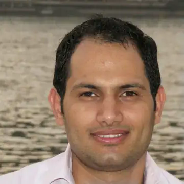
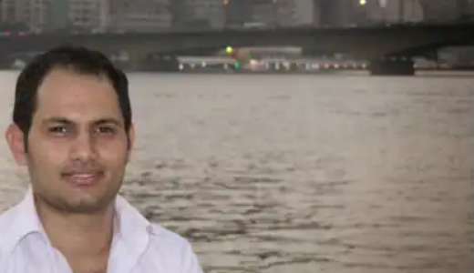

قيادة هندسية تربط الإدارة بالتنفيذ
أحوّل الأهداف التجارية إلى خارطة تقنية، أولويات، مسؤوليات، معايير جودة، ومؤشرات تجعل الفريق يتحرك في اتجاه واحد.
- استراتيجية تقنية وخارطة منتج
- إدارة الفرق والمراجعات الهندسية
- ضبط المخاطر والجودة والإطلاق
LEADERSHIP · PRODUCT · TELECOM
من مجلس الإدارة إلى البروتوكول وقاعدة البيانات — أحوّل التعقيد إلى منتج يعمل، فريق يتحرك، ونمو يمكن الوثوق به.

EXECUTIVE TECHNOLOGY LEADERSHIP
أدخل عندما تكون المشكلة أكبر من صفحة أو API: قرار معماري، فريق يحتاج قيادة، نظام متعثر، أو منتج يجب أن يصل إلى السوق دون أن ينهار عند أول توسّع.
أحوّل الأهداف التجارية إلى خارطة تقنية، أولويات، مسؤوليات، معايير جودة، ومؤشرات تجعل الفريق يتحرك في اتجاه واحد.
من تحليل العمليات إلى قواعد البيانات والواجهات والتكاملات — أبني الصورة الكاملة قبل أن يتحول النمو إلى تكلفة.
أشخّص عنق الزجاجة، أخطاء البيانات، تعقيد الكود، مشاكل الأداء والنشر، ثم أضع مسارًا عمليًا للتعافي دون تعطيل التشغيل.

TELECOM & VAS COMMAND CENTER
خبرة عملية منذ 2019 في خدمات القيمة المضافة، بوابات الرسائل، المسابقات، Bulk SMS، وتكاملات المشغّلين؛ مع خبرة متقدمة في الربط عبر SDP لدى شركة YOU.
اشتراك وإلغاء وتجديد، احتساب الرسوم، Callbacks، سجلات التشغيل، منع التكرار، إعادة المحاولة، وطبقة تكامل تحمي النظام من اختلافات المشغّل.
Bindings وSessions، SubmitSM وDeliverSM، DLR، MO/MT، Throughput، Queues، Retry، Sender IDs وتحليل أخطاء الشبكة.
إدارة الخدمات والمشتركين والمحتوى والكلمات المفتاحية والأرقام القصيرة والاشتراكات الدورية والتقارير التشغيلية والمالية.
الحملات والجدولة والتقسيم، متابعة التسليم، المسابقات والأسئلة، منع التكرار، الردود الآلية واختيار الفائزين.
SELECTED SYSTEMS & PRODUCT IMPACT
مجالات عمل جمعت بين التحليل، المعمارية، التطوير، إصلاح العمليات، قيادة الفرق، والتسليم الفعلي.
منظومة توصيل متعددة الأطراف تشمل التشغيل والسائقين والمطاعم والتقارير المالية واليوم التشغيلي والخرائط والتكاملات؛ حيث تحمي الدقة التقنية المستحقات المالية.
تحويل منصة تعليمية إلى منظومة مدرسة متكاملة للإدارة والمعلم والطالب وولي الأمر، مع الأعوام والفصول والواجبات والاختبارات والنتائج والتقارير.
بوابات رسائل وخدمات اشتراك ومسابقات ومنصات Bulk SMS مصممة حول منطق المشغّل والفوترة والتسليم، لا مجرد استدعاء API.
تحويل الإجراءات المبعثرة إلى تدفقات عمل وصلاحيات وتقارير وسجلات تدقيق تجعل التشغيل قابلًا للمتابعة والقياس.
تجربة PWA سريعة تحول الفرص إلى رحلة استخدام واضحة، قابلة للنشر على الويب والتغليف كتطبيق.
منصة بيانات ومحتوى رياضي تعتمد على مزامنة البطولات والمواسم والفرق والمباريات والترتيب والهدافين.
عينة تنفيذ موثقة تثبت أنني أفضّل العمل القابل للمراجعة على الضجيج.
EDUCATION & RESEARCH
جامعة القاهرة، مصر. تركيز بحثي في معالجة اللغة العربية، تحليل النصوص، تعلّم الآلة والتعرّف على الكيانات المسماة.
جامعة القاهرة، مصر — تخصص رئيسي: تكنولوجيا المعلومات، وتخصص فرعي: نظم المعلومات — التقدير: جيد جدًا.
دمج عدة مصنّفات تعلّم آلي لتحسين التعرّف على الكيانات المسماة في النص العربي، مع تقييم على ALTEC‑NE وANERcorp.
فتح سجل البحث والـ DOI ↗CAREER ARC
توسع مستمر في المسؤولية: من الخوارزمية والكود إلى الفريق والمنتج والتشغيل والقرار.
ريادة سوفت وإبداع الريادة — قيادة الإدارة والتخطيط والفرق والمعمارية والجودة والتسليم.
وصل آفاق — قيادة حلول البرمجة وخدمات الاتصالات وVAS والتكاملات التشغيلية.
بناء منتجات ويب وأنظمة تشغيلية وقيادة فرق ومشاريع في SmartApps وSmart Life.
تدريس وتبسيط المفاهيم التقنية في جامعات يمنية.
معالجة اللغة العربية وتحليل النصوص والتعرّف على الكيانات المسماة وتعلّم الآلة.
LET'S BUILD THE OUTCOME
وظيفة قيادية، مشروع جديد، نظام متعثر، أو تكامل اتصالات حساس — أرسل التحدي كما هو، وسأبدأ من القرار الذي يجب حسمه.